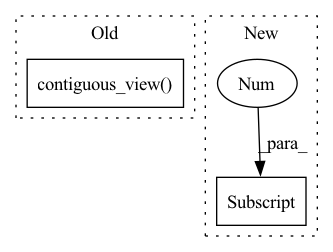

Pattern ID :9103

Before Change
kernel_name = "elementwise"
conv_src = ""
elementwise_prefix = "\n".join([buf.contiguous_view(name) for name, buf in ewbufs])+ \
"\n\ninline float _ewop("+",".join(["int gid", "float acc"]+[f"__global const float *{name}_g" for name, _ in ewbufs])+") {\n"+ \
"\n".join([f"float {name} = get_{name}({name}_g, gid);" for name, _ in ewbufs])+ \
f"\nreturn {code}; }}"
After Change
conv_src = ""
views = {name:buf.contiguous_view_constant_fold(name) for name, buf in ewbufs}
elementwise_prefix = "\n".join([x[0] for x in views.values()])+ \
"\n\ninline float _ewop("+",".join(["int gid", "float acc"]+[f"__global const float *{name}_g" for name, _ in ewbufs if views[name][1]])+") {\n"+ \
"\n".join([f"float {name} = get_{name}({name}_g, gid);" if views[name][1] else f"float {name} = get_{name}(gid);" for name, _ in ewbufs])+ \
f"\nreturn {code}; }}"
In pattern: SUPERPATTERN
Frequency: 3
Non-data size: 2
Instances
Fragment ID: 33209322
Project Name: geohot/tinygrad
Commit Name: 81b73f97a33118f7c3a6b7996a4dabaea6221b50
Time: 2022-07-04
Author: 72895+geohot@users.noreply.github.com
File Name: tinygrad/llops/ops_gpu.py
M Class Name: GPUBuffer
N Class Name: GPUBuffer
M Method Name: _processing_op(4)
N Method Name: _processing_op(4)
M Parent Class:
N Parent Class:
M File Name: tinygrad/llops/ops_gpu.py
N File Name: tinygrad/llops/ops_gpu.py
M Start Line: 130
M End Line: 193
N Start Line: 173
N End Line: 186
'>
Before Change
else:
// fallback to float
ewtypes.append(f"__global const float *{name}_g")
getters.append(buf.contiguous_view(name))
getters.append(f"inline float4 get4_{name}(__global const float *x, const sampler_t smp, int2 loc, int gid) {{"+
f"return (float4)(get_{name}(x,gid+0), get_{name}(x,gid+1), get_{name}(x,gid+2), get_{name}(x,gid+3)); }}")
After Change
f"return (float4)(get_{name}(gid+0), get_{name}(gid+1), get_{name}(gid+2), get_{name}(gid+3)); }}")
// remove fakebufs
ewbufs = [x for x in ewbufs if x[0] not in fakebufs]
elementwise_prefix = "\n".join(getters)+ \
"\n\ninline float4 _ewop("+",".join(["const sampler_t smp", "int2 loc", "int gid", "float4 acc"]+ewtypes)+") {\n"+ \
'>
Fragment ID: 33209323
Project Name: geohot/tinygrad
Commit Name: d8e7f1f8bc2d0723e78d8d4362fe020b5cdaf161
Time: 2022-07-08
Author: geohot@gmail.com
File Name: accel/opencl/ops_opencl.py
M Class Name: OpenCLBuffer
N Class Name: OpenCLBuffer
M Method Name: _processing_op(4)
N Method Name: _processing_op(4)
M Parent Class: GPUBuffer
N Parent Class: GPUBuffer
M File Name: accel/opencl/ops_opencl.py
N File Name: accel/opencl/ops_opencl.py
M Start Line: 122
M End Line: 154
N Start Line: 120
N End Line: 168
'>
Before Change
// this function doesn"t need a memory access
return f"inline float get_{name}(int gid) {{ int valid = 1; int idx = gid; {x.st.expr().replace("//", "/")}; return valid ? {x._backing[0]} : 0.0;}}", None, f"get_{name}(idx);"
else:
return x.contiguous_view(name), f"__global const float *{name}_g", f"get_{name}({name}_g, idx);"
def unary_op(x, op:UnaryOps): return type(x)(x.shape)._processing_op([("A", x)], GPUBuffer.code_for_op[op])
def binary_op(x, op:BinaryOps, y:GPUBuffer): return type(x)(x.shape)._processing_op([("A", x), ("B", y)], GPUBuffer.code_for_op[op])
After Change
def contiguous_view_constant_fold(x, name:str, reduce:Optional[int]=None) -> Tuple[str, Optional[str], str]:
idx_getter = f"int valid = 1; {"long" if prod(x.shape) >= 2**31 else "int"} idx = gid; {"idx *= "+str(reduce)+" idx += subidx;" if reduce is not None else ""} {x.st.expr().replace("//", "/")};"
constant = x._backing[0] if x._base_shape == (1,) and x._backing is not None else None
args = (["__global const float *x"] if constant is None else []) + ["int gid"] + (["int subidx"] if reduce is not None else [])
return f"inline float get_{name}({",".join(args)}) {{ {idx_getter} return valid ? {constant if constant is not None else "x[idx]"} : 0.0;}}", \
f"__global const float *{name}_g" if constant is None else None, \
'>
Fragment ID: 33209319
Project Name: geohot/tinygrad
Commit Name: b7f748c15a7ffff7c54a80fa36deed1737e1250e
Time: 2022-10-04
Author: 72895+geohot@users.noreply.github.com
File Name: tinygrad/llops/ops_gpu.py
M Class Name: GPUBuffer
N Class Name: GPUBuffer
M Method Name: contiguous_view_constant_fold(3)
N Method Name: contiguous_view_constant_fold(2)
M Parent Class:
N Parent Class:
M File Name: tinygrad/llops/ops_gpu.py
N File Name: tinygrad/llops/ops_gpu.py
M Start Line: 122
M End Line: 128
N Start Line: 118
N End Line: 124